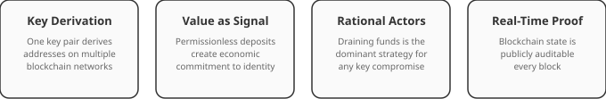
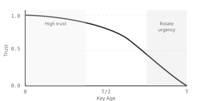

Why we let attackers guard the keys
Every secure system on the internet rests on someone's promise that a key hasn't been stolen. Adversarial Security replaces the promise with a number anyone can check.

The promise that keeps breaking
When you load a bank's website or install a signed update, you're trusting a key — a piece of cryptography asserting "this really came from them." You don't verify that yourself. A certificate authority vouches for it.
The trouble is that certificate authorities get breached. In 2011 attackers took the seeds behind RSA's SecurID tokens, undermining two-factor authentication at defense contractors worldwide. The Dutch CA DigiNotar was compromised and used to issue fraudulent Google certificates against Iranian users; it went bankrupt within two months. Symantec mis-issued thousands of certificates and lost its place in Chrome. In 2023 China-based actors stole a Microsoft signing key and forged access tokens for government email. SSLMate keeps a running timeline of these failures, and it is not short.
Each breach shares a shape. Trust was asserted, not measured. When one authority fell, every certificate it ever issued became suspect — and nobody could tell when it went bad. Revocation lists lag compromise by weeks.
The people guarding the keys are paid the least
The whitepaper makes a point most security writing skips. The people who administer sensitive systems are often the lowest-paid staff in the organization. The 2015 OPM breach exposed security-clearance files on 21.5 million people — administered by contractors on modest salaries, guarding data whose loss was measured in billions and in national-security harm.
When a key's value is invisible, organizations rationally underinvest in protecting it. Attach real money to that key and the incentive corrects itself: nobody runs a wallet holding ten million dollars on a default password.

The move: put money on the key
A signing key can mathematically derive wallet addresses across many blockchains, using the hierarchical-deterministic standards BIP-32, BIP-44 and SLIP-10. The same key that signs your data controls those addresses. One key pair, two jobs, no new infrastructure.
So you deposit funds there. The key now carries a public bounty — and Bitcoin and its successors make that balance auditable by anyone, every block, forever.
Why an attacker gives themselves away
If someone steals the private key, the rational move is to drain the funds immediately. Withdrawal is instant, irreversible, and carries no additional risk — they already have the key. If several attackers hold the same stolen key, they race each other, which only makes it faster.
So the contrapositive is the security property:

Recruiting your enemies
Here is the inversion the name points at. Because derived addresses are permissionless, anyone can raise the stakes on a key they need to trust — no permission required. A hospital depending on a device vendor's signing key can fund that key's addresses directly.
They can go further and publish a bounty: here is the key, here is what it protects, here is when more money arrives. That invitation reaches the people most able to break it — hacker collectives, nation-state operators, organized crime. If they cannot drain it, the key's integrity has been demonstrated against the most capable adversaries on Earth.
The economics underneath
The bond works as a costly signal, in the sense biologist Amotz Zahavi gave the term with the handicap principle: the expense is exactly what makes it believable. It is also skin in the game in Nassim Taleb's sense — the claimant carries real downside for their own claim.
Requiring funds across several independent chains raises the bar again: a forger must hold real assets on each one, with different address formats, fees and liquidity. Honest actors with long horizons fund the bond because trust pays back. Hit-and-run actors find it too expensive. The two populations separate.

Within an organization the same logic runs sideways. Shared reputation means one person's compromised key lowers everyone's score, which is a live incentive to police each other — the peer enforcement Elinor Ostrom documented in Governing the Commons.
It does not replace PKI. It anchors it.
An X.509 certificate can be bound to a blockchain identity by signing the certificate's public key with the crypto private key and embedding that signature as a certificate extension. Anyone can then walk the chain: certificate → signature → crypto public key → derived addresses → observable balance.
That binding prevents identity splitting, where an adversary presents a legitimate certificate and a legitimate wallet as belonging to different entities, playing separate trust games with each.

What this has to do with $SPACE
The Space Data Network is built on this model. Its nodes, signed data products and identities rest on keys whose integrity is evidenced by visible on-chain value rather than by a certificate someone swore was fine.
$SPACE is the native expression of that value — the asset participants use to bond, to signal trust in each other, and to put skin in the game across the network. You can watch it happen on the live trust graph, where every transfer is a trust edge and every balance is an argument.
The full paper carries the formal treatment — Nash equilibria, separating equilibria, the threat model, X.509 binding and key-rotation decay. Read it on GitHub →